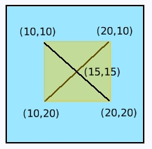

For the next step we need to do some math. We need to be able to determine which one of the 4 "push" segments a point is actually in. There's a unit test to check our work, but now we need to work out the math to make it happen.
Let's review some basic principles. The Squeak graphics coordinate system has its origin in the upper left corner of the display. As you travel across the screen to the right your X values increase. As you travel across the screen heading down your Y values increase. This can be a little confusing since it's inverted for the Y-axis from what you normally think of when drawing lines.
I'm going to flip over our little cross-hatch diagram to make it easier to keep the math straight.

The push regions end up like this for our flipped over diagram. We haven't really changed anything here. The North push side is still on the side farthest from the 0 position in the y-axis.

There are 2 line segments in our diagram. One that begins in the lower left corner and heads up and to the right and the other that begins in the upper left corner and heads down and to the right. Let's call the first line our "heading-up" line and the second line our "heading down" line.
Recall that the equation for a straight line is
y = mx + b
Let's solve for the values of the "heading=up" line equation.
x1 = 10
y1 = 10
x2 = 20
y2 = 20
dy = y2 - y1
dy = 20 - 10
dy = 10
dx = x2 - x1
dx = 20 - 10
dx = 10
m = dy / dx
m = 10 / 10
m = 1
To solve for "b" we plug in one of our known points.
y = mx + b
x = 10
y = 10
10 = m(10) + b
m = 1
10 = 1(10) + b
10 - 10 = b
b = 0
The equation for our "heading-up" line is
y = mx + b
y = 1(x) + 0
y = x
Now we solve for the equation of our "heading-down" line.
x1 = 10
y1 = 20
x2 = 20
y2 = 10
dy = y2 - y1
dy = 10 - 20
dy = -10
dx = x2 - x1
dx = 20 - 10
dx = 10
m = dy / dx
m = -10 / 10
m = -1
To solve for "b" we once again plug in one of our known points.
y = mx + b
x = 10
y = 20
20 = m(10) + b
m = -1
20 = -1(10) + b
20 + 10 = b
b = 30
The equation for our "heading-down" line is
y = mx + b
y = -1(x) + 30
y = 30 - x